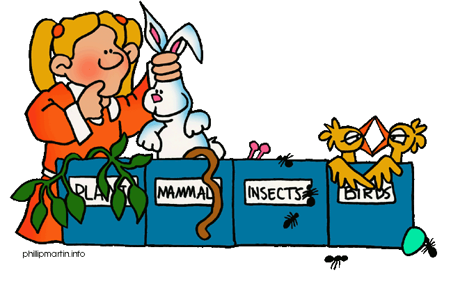
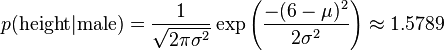

![]()
生活中很多场合需要用到分类，比如新闻分类、病人分类等等。
本文介绍朴素贝叶斯分类器（Naive Bayes classifier），它是一种简单有效的常用分类算法。

一、病人分类的例子
让我从一个例子开始讲起，你会看到贝叶斯分类器很好懂，一点都不难。
某个医院早上收了六个门诊病人，如下表。
症状 职业 疾病
打喷嚏 护士 感冒
打喷嚏 农夫 过敏
头痛 建筑工人 脑震荡
头痛 建筑工人 感冒
打喷嚏 教师 感冒
头痛 教师 脑震荡
现在又来了第七个病人，是一个打喷嚏的建筑工人。请问他患上感冒的概率有多大？
根据贝叶斯定理：
P(A|B) = P(B|A) P(A) / P(B)
可得
P(感冒|打喷嚏x建筑工人)
= P(打喷嚏x建筑工人|感冒) x P(感冒)
/ P(打喷嚏x建筑工人)
假定"打喷嚏"和"建筑工人"这两个特征是独立的，因此，上面的等式就变成了
P(感冒|打喷嚏x建筑工人)
= P(打喷嚏|感冒) x P(建筑工人|感冒) x P(感冒)
/ P(打喷嚏) x P(建筑工人)
这是可以计算的。
P(感冒|打喷嚏x建筑工人)
= 0.66 x 0.33 x 0.5 / 0.5 x 0.33
= 0.66
因此，这个打喷嚏的建筑工人，有66%的概率是得了感冒。同理，可以计算这个病人患上过敏或脑震荡的概率。比较这几个概率，就可以知道他最可能得什么病。
这就是贝叶斯分类器的基本方法：在统计资料的基础上，依据某些特征，计算各个类别的概率，从而实现分类。
二、朴素贝叶斯分类器的公式
假设某个体有n项特征（Feature），分别为F1、F2、...、Fn。现有m个类别（Category），分别为C1、C2、...、Cm。贝叶斯分类器就是计算出概率最大的那个分类，也就是求下面这个算式的最大值：
P(C|F1F2...Fn)
= P(F1F2...Fn|C)P(C) / P(F1F2...Fn)
由于 P(F1F2...Fn) 对于所有的类别都是相同的，可以省略，问题就变成了求
P(F1F2...Fn|C)P(C)
的最大值。
朴素贝叶斯分类器则是更进一步，假设所有特征都彼此独立，因此
P(F1F2...Fn|C)P(C)
= P(F1|C)P(F2|C) ... P(Fn|C)P(C)
上式等号右边的每一项，都可以从统计资料中得到，由此就可以计算出每个类别对应的概率，从而找出最大概率的那个类。
虽然"所有特征彼此独立"这个假设，在现实中不太可能成立，但是它可以大大简化计算，而且有研究表明对分类结果的准确性影响不大。
下面再通过两个例子，来看如何使用朴素贝叶斯分类器。
三、账号分类的例子
本例摘自张洋的《算法杂货铺----分类算法之朴素贝叶斯分类》。
根据某社区网站的抽样统计，该站10000个账号中有89%为真实账号（设为C0），11%为虚假账号（设为C1）。
C0 = 0.89
C1 = 0.11
接下来，就要用统计资料判断一个账号的真实性。假定某一个账号有以下三个特征：
F1: 日志数量/注册天数
F2: 好友数量/注册天数
F3: 是否使用真实头像（真实头像为1，非真实头像为0）F1 = 0.1
F2 = 0.2
F3 = 0
请问该账号是真实账号还是虚假账号？
方法是使用朴素贝叶斯分类器，计算下面这个计算式的值。
P(F1|C)P(F2|C)P(F3|C)P(C)
虽然上面这些值可以从统计资料得到，但是这里有一个问题：F1和F2是连续变量，不适宜按照某个特定值计算概率。
一个技巧是将连续值变为离散值，计算区间的概率。比如将F1分解成[0, 0.05]、(0.05, 0.2)、[0.2, +∞]三个区间，然后计算每个区间的概率。在我们这个例子中，F1等于0.1，落在第二个区间，所以计算的时候，就使用第二个区间的发生概率。
根据统计资料，可得：
P(F1|C0) = 0.5, P(F1|C1) = 0.1
P(F2|C0) = 0.7, P(F2|C1) = 0.2
P(F3|C0) = 0.2, P(F3|C1) = 0.9
因此，
P(F1|C0) P(F2|C0) P(F3|C0) P(C0)
= 0.5 x 0.7 x 0.2 x 0.89
= 0.0623P(F1|C1) P(F2|C1) P(F3|C1) P(C1)
= 0.1 x 0.2 x 0.9 x 0.11
= 0.00198
可以看到，虽然这个用户没有使用真实头像，但是他是真实账号的概率，比虚假账号高出30多倍，因此判断这个账号为真。
四、性别分类的例子
本例摘自维基百科，关于处理连续变量的另一种方法。
下面是一组人类身体特征的统计资料。
性别 身高（英尺） 体重（磅） 脚掌（英寸）
男 6 180 12
男 5.92 190 11
男 5.58 170 12
男 5.92 165 10
女 5 100 6
女 5.5 150 8
女 5.42 130 7
女 5.75 150 9
已知某人身高6英尺、体重130磅，脚掌8英寸，请问该人是男是女？
根据朴素贝叶斯分类器，计算下面这个式子的值。
P(身高|性别) x P(体重|性别) x P(脚掌|性别) x P(性别)
这里的困难在于，由于身高、体重、脚掌都是连续变量，不能采用离散变量的方法计算概率。而且由于样本太少，所以也无法分成区间计算。怎么办？
这时，可以假设男性和女性的身高、体重、脚掌都是正态分布，通过样本计算出均值和方差，也就是得到正态分布的密度函数。有了密度函数，就可以把值代入，算出某一点的密度函数的值。
比如，男性的身高是均值5.855、方差0.035的正态分布。所以，男性的身高为6英尺的概率的相对值等于1.5789（大于1并没有关系，因为这里是密度函数的值，只用来反映各个值的相对可能性）。

有了这些数据以后，就可以计算性别的分类了。
P(身高=6|男) x P(体重=130|男) x P(脚掌=8|男) x P(男)
= 6.1984 x e-9P(身高=6|女) x P(体重=130|女) x P(脚掌=8|女) x P(女)
= 5.3778 x e-4
可以看到，女性的概率比男性要高出将近10000倍，所以判断该人为女性。
（完）
![]() 《如何变得有思想》
《如何变得有思想》 twitter
twitter![]() weibo
weibo


FPs 说：
学习了。上周刚刚为AI课程的project写了一个朴素贝叶斯分类器，对人物进行职业和朝代等的分类。
2013年12月16日 20:49 | # | 引用
Kyle 说：
病人分类的例子里贝叶斯公式分母展开后应该加上括号:
2013年12月16日 23:21 | # | 引用
Eric 说：
概率论的东西基本都忘过了。。。看不懂。。。
2013年12月17日 15:01 | # | 引用
唐大侠 说：
条件概率真搞不清是怎么回事了
2013年12月17日 15:26 | # | 引用
Josh 说：
Thank you very much for sharing!!!
2013年12月18日 03:40 | # | 引用
talentayee 说：
thanks a lot, 让我对数学又恢复了激情
2013年12月19日 08:37 | # | 引用
不告诉你 说：
能说明下这些数是怎么得来的吗？
0.66 x 0.33 x 0.5 / 0.5 x 0.33
2013年12月19日 16:00 | # | 引用
阮一峰 说：
@不告诉你：
文中给出的链接里有，我嫌统计数据太占篇幅，就省略了。
2013年12月19日 17:47 | # | 引用
YangZX 说：
用来识别代码文件的编程语言会是一个有趣的demo
2013年12月19日 18:15 | # | 引用
森林 说：
学习了，举得例子很实用。 学习知识重要，更重要的学会用知识解决实际问题。
2013年12月22日 13:43 | # | 引用
刑无刀 说：
“所以，男性的身高为6英尺的概率等于1.5789（大于1并没有关系，因为这里是密度函数的值）”——我理解是不是因为最终只是比较相对大小，做一个判定，所以直接采用密度函数的值作为概率值？因为理论上连续变量取某一个具体值的概率都是无穷小。
2013年12月25日 08:09 | # | 引用
阮一峰 说：
@刑无刀：
谢谢指出，你的意见完全正确，我做了一下修改。现在是不是更准确一点了？
2013年12月25日 09:49 | # | 引用
刑无刀 说：
哦哦，感谢解答，这样更易懂了。
2013年12月25日 13:01 | # | 引用
Luax 说：
根据病人特征猜测疾病的例子非常好，浅显易懂。
是不是准备这样的医学库，普通人也可以根据病症来计算得病的最高概率。
这样的话可以节省大量的医疗资源。
2014年1月 1日 11:28 | # | 引用
翁仁杰 说：
非常喜欢最后一个例子中用到的基于高斯分布的概率计算
2014年1月 4日 22:44 | # | 引用
xmf 说：
您的文章写得很好，自己看Stanford的Andrew Ng的机器学习课程的朴素贝叶斯方法，在网上搜到了您的文章，很通俗易懂，例子很好，谢谢您！
2014年2月21日 09:04 | # | 引用
ian 说：
您好！您的文章专业性很强，非常值得学习。我从事数据分析工作，之前给你发了email，不知道您收到没有？我希望能想您请教算法的知识，更希望能邀请您参与我们的分析项目。如果您想进一步了解一下，请您联系我：ian.huang@teein.com
2014年2月21日 17:16 | # | 引用
alex 说：
应用bayes做反垃圾，请问条件概率应该是 one token tf／ham or spam token tf 还是df的比例更合适？
2014年3月 5日 08:30 | # | 引用
Monte Carlo 说：
第一个例子 确定 P(B)是那么算的？不应该用全概率公式么
2014年3月 6日 04:09 | # | 引用
zhangxaochen 说：
最后的表达式 6.1984 * e-9 是否有问题？ 如果想表达 6.1984 * 10^-9 的话， 应该是 6.1984e-9， 不该用乘号，也不该把 -9 写到指数位置
2014年3月14日 02:00 | # | 引用
zhangxaochen 说：
另外， 1.5789 是怎么算出来的呢？ 我算得 0.002137402507386169， 难道有什么玄机。。。。
2014年3月14日 02:09 | # | 引用
ian 说：
您好！您的文章专业性很强，非常值得学习。我从事数据分析工作，之前给你发了email，不知道您收到没有？我希望能想您请教算法的知识，更希望能邀请您参与我们的分析项目。如果您想进一步了解一下我们的项目与回报，请您联系我：ian.huang@teein.com
2014年3月28日 14:35 | # | 引用
Quison 说：
想问问方差是什么算出来的，我算得的是0.026275
2014年4月23日 22:16 | # | 引用
独奏 说：
非常好，希望能讲一些机器学习的基础性东西~
2014年7月10日 09:13 | # | 引用
zhanghe 说：
写的非常好。
2014年8月10日 10:31 | # | 引用
jack 说：
非常好的博客, 学习了!
对于文本分类，相比于贝叶斯，KNN分类算法效率更高吧，但两者分别适用的场合是什么样的, 例如有哪些情况贝叶斯可以用，KNN不适合，或者Bayes效率更高? 哪些情况又是KNN适合, Bayes不适合, KNN效率更高呢?
2014年8月30日 16:55 | # | 引用
影子and风 说：
很感谢您写的博文！在本科做毕业设计的时候，从你介绍RSA的文章中收到很大的启发！现在数据挖掘的一个小任务就是数据分类，又是从您的文章开始的。非常感谢！
2014年9月21日 14:52 | # | 引用
l_a_den 说：
这个看得懂就可以了，没必要深究了。大家普遍说得方差问题，下面是除以(n-1),而不是n。大家再算算就对了。
2014年10月15日 15:44 | # | 引用
是 说：
这里也是让我看了大半天，搞了半天*不是*
2014年11月21日 11:13 | # | 引用
文忠 说：
写得太好了。我的数学基础不是很好，但是通过通俗易懂的讲解过程，很容易看懂，我们这种非专业人士太需要这种文章了。
2014年12月16日 20:01 | # | 引用
iwbpm 说：
我是对数学理论应用到实际问题方面非常感兴趣，可是自己对数学本身又不是太感冒，而且还有些厌烦。工作中，很多时候想到用数学和计算机算法理论来解决问题，但是只能想到大概用什么模型来解决，再具体到算式和计算数值方面简直是要命啊，完全不会算。
向您学习！
2014年12月16日 20:39 | # | 引用
Alex 说：
毕业设计是微博性别分类研究，您的博客对我帮助很大，非常感谢！
2015年3月16日 12:23 | # | 引用
xiaomogu 说：
我很想说看过你的这个博客之后我是什么感觉，但是我还没看，等我回来之后吧~
2015年4月 7日 08:52 | # | 引用
Frank 说：
学习了，比教材上易懂，只能说强！
2015年4月10日 17:30 | # | 引用
阿宝 说：
1.5789 是怎么算出来的呢？ 我算得 0.002137402507386169
2015年5月22日 15:27 | # | 引用
阿宝 说：
C# 代码 正态 分布计算：
using System;
using System.Collections.Generic;
using System.Linq;
using System.Text;
using System.Threading.Tasks;
namespace ConsoleApplication1
{
class Program
{
static void Main(string[] args)
{
Console.WriteLine(NormalDist(6, 5.855, 0.035));
}
//第一个参数是 你的数据，第二个是平均值，第三个是方差
public static double NormalDist(double x, double mean, double standard_dev)
{
double fact = standard_dev * Math.Sqrt(2.0 * Math.PI);
double expo = (x - mean) * (x - mean) / (2.0 * standard_dev * standard_dev);
return Math.Exp(-expo) / fact;
}
}
}
2015年5月22日 15:35 | # | 引用
liu_sir 说：
看了你的代码，文中的方差0.035其实对应的是你定义的参数standard_dev的平方，问题出在这里。
2015年5月27日 16:14 | # | 引用
李瑞 说：
请问
P(感冒|打喷嚏x建筑工人)
= P(打喷嚏|感冒) x P(建筑工人|感冒) x P(感冒)
/ P(打喷嚏) x P(建筑工人)
这个公式能证明一下么？
2015年7月 1日 22:30 | # | 引用
Van 说：
上文已假设“打喷嚏”与“建筑工人”是*独立*的，所以就有：
P(打喷嚏x建筑工人)=P(打喷嚏) x P(建筑工人)
在“感冒”事件发生的前提下，就有：
P(打喷嚏x建筑工人|感冒) =P(打喷嚏|感冒) x P(建筑工人|感冒)
大学的高等数学都忘得差不多了，看了文章有那么点印象，不知道我的回复对你而言有没有用。
2015年8月 7日 10:09 | # | 引用
xy 说：
楼主，你好。请问“比如将F1分解成[0, 0.05]、(0.05, 0.2)、[0.2, +∞]三个区间”，这个区间是怎么划分的？？？谢谢。
2015年8月24日 00:13 | # | 引用
ningyu 说：
性别分类的例子是不是没有使用先验？
2015年9月27日 17:20 | # | 引用
大胡子 说：
真的很不错! 生动形象,motivation讲的很棒,例子举得也很贴切
希望可以多写一些MachineLearning中的一些数学原理~
赞！
2015年10月16日 17:22 | # | 引用
pkf 说：
0.035 怎么计算来的？
2016年4月11日 13:15 | # | 引用